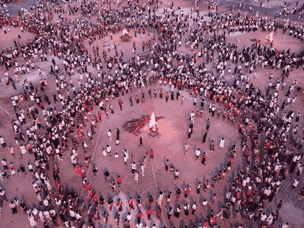
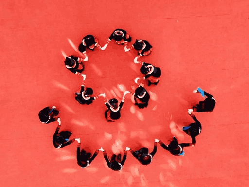
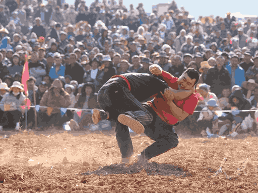
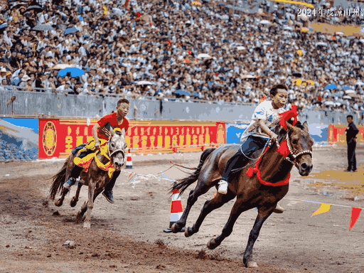
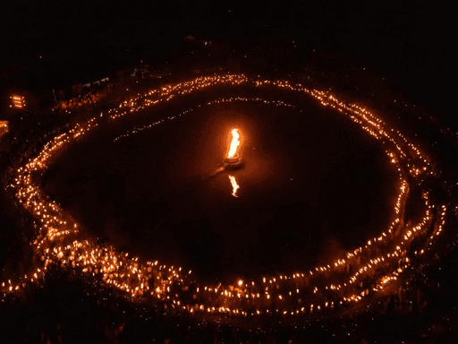
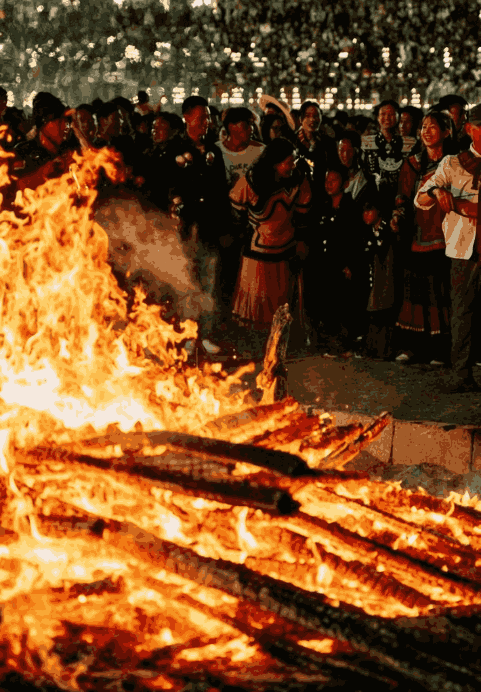

东方狂欢夜 · 火光中的祈愿
每
年农历六月二十四，是彝族最盛大的传统节日——火把节。这一天，夜幕降临后，村村寨寨点燃火把，人们手持火炬，在山间田野奔跑，形成一条条火龙，照亮夜空。
关于火把节的起源，有一个动人的传说：远古时期，天上有个大力士斯热阿比下凡与人间大力士阿提拉八摔跤，结果被摔死。天神大怒，放出蝗虫危害庄稼。彝族人民点燃火把烧死蝗虫，保护了庄稼。从此，每年六月二十四都要过火把节，纪念这次胜利。
火把节被誉为"东方的狂欢节"，是彝族、白族、纳西族等西南少数民族共同的节日，已被列入国家级非物质文化遗产名录。

祭火、玩火、送火的完整仪式
清晨，各村寨举行祭祀仪式，毕摩（祭司）诵经祈福，祈求火神保佑村寨平安、五谷丰登。午后，家家户户准备节日食物，宰杀牲畜，酿制美酒。
傍晚，德高望重的老人用传统方式钻木取火，点燃第一把神圣的火种，分给各家各户。
这是节日的高潮。白天举行摔跤、赛马、射箭等传统体育比赛。夜晚，人们点燃火把，在田间地头绕行，驱虫除害。
广场上燃起巨大的篝火，男女老少围着火堆跳达体舞，歌声、欢呼声响彻云霄，直到深夜。
最后一天，人们继续欢聚，但气氛更加温馨。青年男女借机表达爱意，互赠礼物。
夜幕降临时，人们将剩余的火把集中到一起，形成巨大的火堆，象征将灾祸、疾病全部烧毁，迎接新一年的好运。

"达体"意为"跺脚"，是彝族最具代表性的集体舞蹈。众人手拉手围成圆圈，随着音乐节奏，整齐地跺脚、转身、跳跃。动作粗犷豪放，气势磅礴，体现了彝族人民的团结和力量。

摔跤是火把节的传统竞技项目。选手们腰系红布带，在裁判的哨声中展开激烈角逐。获胜者被视为英雄，会受到全村的尊敬和奖赏。这项运动展现了彝族男儿的勇武精神。

骑手们身着盛装，骑着骏马在赛场上飞驰。除了速度赛，还有马术表演，如马上拾物、倒立骑马等高难度动作。观众欢呼声此起彼伏，场面热烈壮观。

夜幕降临，广场中央燃起数米高的篝火。人们围绕火堆，边唱边跳，火光映照着每个人的笑脸。年轻人借此机会对歌、交友，老人则讲述古老的故事，传承民族文化。
对于彝族人民来说，火不仅是生活的必需品，更是神圣的象征。火把节体现了深厚的火文化信仰：
火代表光明和希望，能驱散黑暗和邪恶。彝族人民相信，火具有净化和庇护的力量，能够保佑家人平安健康。
火把绕田可以烧死害虫，保护庄稼。这反映了古代农业社会对丰收的期盼，是农耕文明的生动体现。
节日期间，分散各地的族人回到家乡，共同参与庆典。通过集体活动，强化了血缘纽带和民族认同感。
达体舞的节奏象征着生命的律动，篝火的热度代表着生活的热情。整个节日是对生命力量的赞美和庆祝。
